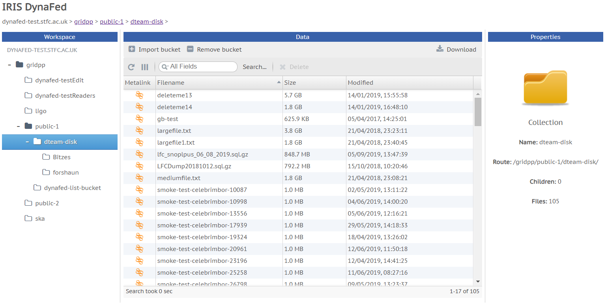
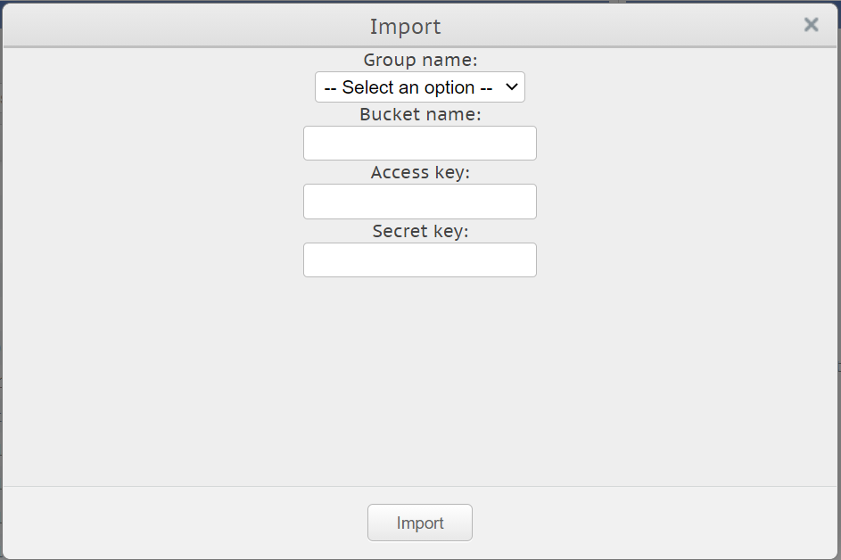

IRIS DynaFed: Help Page
Last updated: 20th January, 2021
IRIS DynaFed provides an intuitive, user-friendly federated storage platform for securely managing and accessing your data in Echo S3 storage. With a simulated directory structure designed to look and feel like a file system, as well as additional features that provide extended functionality, IRIS DynaFed is a platform that focuses on simplicity, familiarity and efficiency.
What is IRIS DynaFed?
IRIS DynaFed allows for easy and flexible management of your Echo S3 bucket storage. Use it to download, delete, search, share and securely manage your data, logs, files and more, all through an intuitive user interface. The service is designed for scientific collaboration but any Echo buckets containing any sort of data can be imported and managed in IRIS DynaFed. IRIS DynaFed is aimed at groups of users who want to share data with each other without having to share sensitive bucket keys.
How does it work?
DynaFed works by allowing access to data in buckets based on authorisation rules. In this way, a bucket can only be accessed in
DynaFed if an authenticated user is authorised to access it. DynaFed handles the user authorisation as well as the secure management
of bucket keys – the user doesn’t even need to know the keys to the bucket, thus reducing the likelihood of keys being leaked or
exposed to malicious parties.
Echo S3 buckets are imported into and removed from IRIS DynaFed. This does not mean that S3 buckets are being created and deleted –
DynaFed does not possess this functionality. Buckets are only being imported from Echo so that users can interact with them through
the browser. Removing a bucket does not delete it – it only removes the group’s access to it and the bucket will disappear from
DynaFed.
When buckets are imported into IRIS DynaFed, they are assigned to a group, which the user must specify. The user can only select a
group that they are a member of. To import a bucket, the bucket name, access key and secret key are required. Once buckets are
imported into DynaFed, their contents can be viewed, searched and downloaded, by anyone who is a member of the assigned group. It
is also possible to delete files from buckets on an individual basis. Buckets can be assigned to multiple groups but this requires
the bucket to be “imported” multiple times.
Buckets in DynaFed can only be interacted with by members of the group a bucket is assigned to. If you are not a member of this group,
you will not be able to interact with the bucket in any way. This ensures security and privacy of files and protects your buckets from
unauthorised accesses.
IRIS IAM and Groups
IRIS DynaFed is integrated with the IRIS IAM service for user authentication. This makes it open for anyone with an IRIS IAM login to
use. The IRIS IAM service provides accounts for users from a wide range of research institutions and universities. IRIS DynaFed makes
use of the group membership system provided by the IRIS IAM. Groups are formed by users for a particular purpose, often for research
and collaborative purposes. Members of groups can then import S3 buckets from Echo storage that are then assigned to that group so
that other members can interact with the bucket.
IAM groups are designed to be collaborative and IRIS DynaFed is how users can share their bucket data with their teams. Once an IAM
user is a member of at least one IAM group, they can start using IRIS DynaFed! For information on how to register an IAM account,
visit https://iris-iam.stfc.ac.uk/help/.
Bucket Importing and Removing
Importing buckets into IRIS DynaFed is simple. Pressing the Import bucket button at the top of the interface will show this popup
window:

If you know the access key and secret key to a bucket in Echo, this is where you can import it. Use the dropdown list at the top of
the window to select which group to assign it to. Once assigned, other members of that group will be able to interact with the bucket
and its contents. Then just enter in the name of the bucket in Echo (for example, if the bucket URL is
https://s3.echo.stfc.ac.uk/bucket-name, then enter bucket-name) and the access key and secret key for that bucket.
Clicking Import will complete the process. It can take up to 10 minutes for a bucket to appear in IRIS DynaFed. Refresh the page
every few minutes.
Removing a bucket is just as simple. Clicking the Remove Bucket button will greet the user with a similar popup window, except this
time the bucket specified by the user will be removed from DynaFed and the group will no longer have access to it. The process of
removing a bucket will immediately remove access by all group members but the link to the bucket may still be visible for another
10 minutes.
Navigation
Buckets are navigated primarily using the mouse. Browse the list of groups in IRIS DynaFed using the list on the left hand side of
the screen. Note that the list includes groups and buckets you may not be part of and therefore will not be able to access.
The list behaves like a traditional file explorer in that clicking a folder will expand it to view child folders (the folders in this
case being groups and buckets). Clicking on buckets will display its contents in the main window in the centre of the screen.
Directories and Object Paths
Directories are not a feature of Echo storage. Despite this, DynaFed simulates them to mimic the look and feel of a file system. If an object has the path bucket-name/path/to/file.txt, then file.txt will be accessible by navigating through the directories path and to under bucket-name.
Additional Help
IRIS DynaFed is managed by the STFC Data Services team. If you have any questions, get in contact with them by email using SCDDSSAdmins@stfc.ac.uk. Additionally, you can consult the IRIS IAM help page for info on how to use the IRIS IAM portal by navigating to https://iris-iam.stfc.ac.uk/help/.